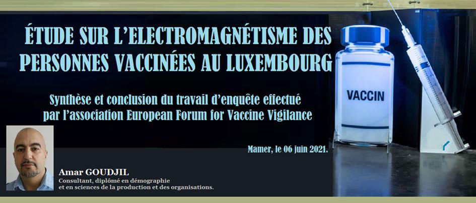
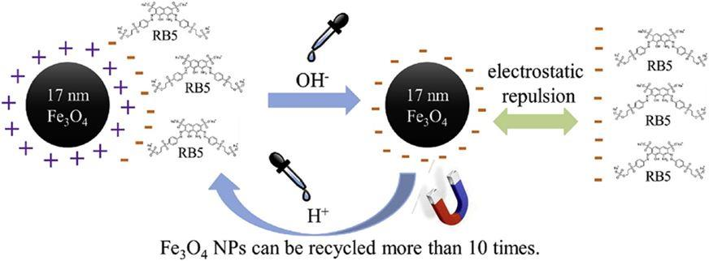
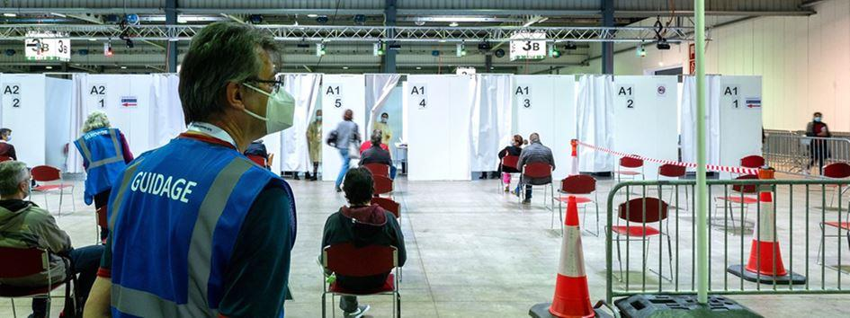

Étude sur l’électromagnétisme des personnes vaccinées au Luxembourg
par Amar GOUDJIL

Depuis quelques mois, ce sont des centaines de vidéos amateurs qui fleurissent un peu partout sur les réseaux sociaux mettant en scène des personnes visiblement devenues électromagnétiques suite à la vaccination. C’est en tout cas ce que l’on peut observer.
Après que de nombreuses questions nous ont été posées par un certain nombre de nos membres sur cet effet d’électromagnétisme « supposé » apparaissant chez les sujets vaccinés, notre association a pris la décision de s’intéresser concrètement à ce sujet pour le moins intriguant.

Image tirée du site www.siencedirect.com
Est-ce que cet effet est donc réel ou n’est-ce juste qu’une élucubration ?
Cette enquête, à caractère statistique et sociologique portant sur cet effet d’électromagnétisme « supposé » et dont il est question ici, soulève à minima et au préalable trois questions importantes :
-1- Est-il vrai que les gens présentent un effet d’électromagnétisme après acte de vaccination ?
-2- Si tel est le cas, est-il vrai que seuls les individus vaccinés présentent cet effet ?
-3- Qu’est-ce qui est réellement injecté aux individus sous la qualification de vaccin et qui pourrait provoquer cet effet ?
Pour tenter de répondre à ces questions, l’enquête a été confiée à l’un des membres de l’association. Il s’agit de la personne chargée de traiter des questions démographiques et sociologiques.
Présentation des paramètres de l’enquête
À des fins d’une réalisation accélérée, il a été décidé :
- D’interroger un panel de 200 individus domiciliés ou travaillant au Luxembourg.
- Que ce panel serait divisé en 2 groupes : le premier serait composé de 100 individus vaccinés au Luxembourg et le second de 100 individus non vaccinés à des fins de comparaison.
- Que chacun de ces groupes devrait compter 50 femmes et 50 hommes.
- Que seuls les individus actifs seraient retenus pour participer à l’étude en raison du fait qu’ils sont beaucoup plus contraints à la vaccination que les individus inactifs.
- Que le lieu de l’étude serait le centre commercial Belle-Étoile et la route d’Arlon à Strassen.
- Que les variables retenues seraient donc le sexe, l’âge, la profession, le nombre d’injections, l’origine pharmaceutique des injections, la date des injections, l’attraction magnétique, l’émission-réception d’un champ électrique et la ville du lieu de résidence de la personne interrogée.
NB : Il convient par ailleurs de préciser que pour des raisons de praticité, seuls les personnes portant des vêtements à manches courtes ou des vêtements sans manches seraient interrogées.

Présentation de la méthode d’approche et de réalisation de l’enquête
- L’interrogateur se présente aux individus, présente l’association, puis présente l’enquête :
« Bonjour Madame ou monsieur, je vous prie de bien vouloir m’excuser de vous déranger mais je m’appelle Amar, je travaille pour l’association European Forum for Vaccine Vigilance (EFVV) et je réalise actuellement une enquête statistique et anonyme sur les personnes vaccinées et les personnes non vaccinées vivant au Luxembourg » … « Il s’agit d’une enquête qui porte sur des informations stipulant que les gens vaccinés pourraient présenter des effets électromagnétiques et nous, à EFVV, nous cherchons à savoir si c’est bien la réalité observée ».
- L’interrogateur demande ensuite aux interrogés s’ils veulent bien, en connaissance de cause, participer de leur gré à l’enquête.
« Est-ce que vous auriez quelques minutes à m’accorder s’il vous plaît et est-ce que cela vous intéresserait de participer à notre enquête ? ».
- L’enquêteur explique ensuite aux individus interrogés les intérêts de l’enquête et introduit les individus dans le vif du sujet en leur présentant un aimant qu’il accroche, par effet magnétique, à un objet métallique (poteau, voiture, etc). Il explique ensuite aux personnes interrogées que les aimants n’adhèrent pas à l’homme et qu’ils n’adhèrent qu’aux objets métalliques mais que des informations nous sont parvenus prétendant que les gens vaccinés généraient une attraction à l’aimant en raison justement du fait qu’ils ont été vaccinés.
- L’enquêteur demande ensuite à l’interrogé(e) si, il ou elle, veut bien se prêter au jeu et appliquer l’aimant sur son épaule, à l’endroit où, il ou elle, a été injectée.
- Lorsque l’aimant colle à la peau au niveau de l’épaule, l’enquêteur demande alors à la personne de coller l’aimant sur l’autre épaule pour savoir si l’adhésion ne trouve pas son explication dans une concentration ferrique locale (implant, effet de l’injection, etc).
- L’enquêteur demande ensuite à l’interrogé(e) si, il ou elle, veut bien se laisser passer un testeur de champs électriques et de champs magnétiques (marque Meterk, modèle MK54) au niveau des épaules en expliquant que des informations avaient également été rapportées à notre association et qui disaient que les gens vaccinés étaient également générateurs de champs électriques.
- L’enquêteur continue la discussion et continue de répondre, dans la mesure du possible, aux personnes interrogées qui s’intéressent à l’expérience menée et aux résultats de l’enquête.
Présentation synthétique des résultats pour la semaine d’étude du 1er juin au 5 juin 2021
- Seules 30 personnes vaccinées et 30 personnes non vaccinées ont finalement été interrogées alors que l’objectif était d’en interroger 100 pour le premier groupe et 100 pour le second.
- La condition de la répartition par genre a été respectée. Dans chaque groupe, il a été interrogé 15 femmes et 15 hommes.
- Dans le groupe des non-vaccinés, sur les 30 individus interrogés, le nombre de personnes présentant une attraction à l’aimant est de 0 (zéro). L’expérience s’arrête donc là pour ce groupe.
- Dans le groupe des vaccinés en revanche, sur les 30 individus interrogés, 29 présentent une attraction à l’aimant. C'est-à-dire que l’aimant adhère à leur peau sans difficulté. Toutes, ce sont fait vacciner en vaccinodrome.
NB : La 30ème personne, qui ne présente pas d’accroche à l’aimant, ne s’est pas faite vacciner en vaccinodrome comme toutes les autres. Elle s’est faite vacciner par une infirmière avec qui elle travaille depuis de nombreuses années.
- Sur ces 29 individus, 22 ont l’aimant qui adhèrent sur une seule épaule et uniquement sur la zone de l’injection. Ces 22 personnes sont celles qui n’ont reçu qu’une seule injection.
Les 7 autres personnes de ce même groupe ont l’aimant qui adhèrent sur les deux épaules.
Luxexpo transformé en vaccinodrome géant pour tout le Luxembourg
- Dans ce groupe dit des vaccinés, domiciliés ou travaillant au Luxembourg, il ressort que :
17 ont reçu au moins une injection du laboratoire Pfizer
7 ont reçu au moins une injection du laboratoire Astra Zeneca
3 ont reçu au moins une injection du laboratoire Moderna
3 ont reçu l’injection unique de Johnson & Johnson
6 ont reçu les 2 injections du laboratoire Pfizer
1 a reçu les 2 injections du laboratoire Astra Zeneca
1 a reçu les 2 injections du laboratoire Moderna
- 2 des individus de ce groupe, un infirmier travaillant au CHL et ayant été un des premiers à se faire vacciner, et un analyste financier, ont présenté des émissions de champs électrique totalement anormales. Pour l’infirmier, il a même été réalisé une vidéo qui montre les valeurs émises par le testeur aux environs de son épaule gauche. Pour l’analyste, les valeurs émises par le testeur étaient approximativement les mêmes mais l’individu a brusquement mis fin à sa participation sous l’effet de la panique.
- Sur les 30 personnes interrogées faisant partie du groupe des vaccinés, 29 résident ou travaillent à Strassen. 1 seule habite à Metz mais travaille à Strassen.
- Il semblerait que les personnes qui ont été vaccinées plus tôt dans le programme de vaccination gouvernemental sont beaucoup plus électromagnétiques que les personnes qui l’ont été de façon plus récente. L’aimant adhère plus vite et tient beaucoup mieux que chez les personnes fraîchement vaccinées.
- Il conviendrait de prendre des mesures plus précises en relation avec ce dernier constat.
Remarque : L’exercice étant totalement déstabilisant pour les gens interrogés, à aucun moment il ne leur est demandé d’appliquer l’aimant sur une autre zone que les épaules. Il aurait été très intéressant de savoir si l’aimant adhère également sur les zones du cou, de la poitrine, du front ou des jambes ainsi que de savoir si d’autres objets tels que des cuillères, ciseaux et smartphones adhèrent également. Ce n’est pas faisable en espace public.
Conclusion
- Il ressort que les personnes vaccinées dégagent bien un champ électromagnétique et que, plus les individus ont été vaccinés tôt, plus ils dégagent un champ fort. Cette sensation et cette appréciation, qui ne relève uniquement que de l’expérience tactile à l’application et au retrait de l’aimant à l’épaule, devrait faire l’objet d’une vérification beaucoup plus précise, sur un plus grand nombre de personnes et avec des appareils beaucoup plus précis.
- Il a été extrêmement difficile de trouver des individus acceptant de se prêter au jeu de cette expérience assez déstabilisante.
- Les individus s’intéressent à l’expérience par curiosité et puis, quand ils voient que l’aimant s’accroche à leur peau, ils deviennent dubitatifs dans un premier temps, puis d’un coup ils deviennent froids. Certains d’entre eux deviennent même extrêmement nerveux pour ne pas dire qu’ils semblent être complètement sous le choc.
- Les personnes s’interrogent sincèrement sur le fait de voir comment il est possible qu’un aimant puisse adhérer à leur peau aussi facilement que celui-ci adhère à un poteau métallique.
- Ils demandent des explications et l’enquêteur les rassure en leur disant qu’il doit bien y avoir une explication physique ou biologique. Ils sont renvoyés vers le médecin qui leur a conseillé de se faire injecter à des fins de compréhension.
- Une dame a même pleuré en disant qu’elle ne voulait pas se faire vacciner mais qu’elle a été contrainte par son employeur qui l’y a obligé au prétexte qu’elle travaille au contact de la clientèle.
- Dans les discussions, il ressort que les gens ne se vaccinent même pas pour des raisons médicales ou des raisons de santé, ni par conviction ou par peur de la maladie mais plus souvent dans l’espoir de revenir à une vie normale et de pouvoir à nouveau voyager librement.
- Lors des échanges, les gens expriment clairement leur désarroi en disant après coup qu’ils sont pris en otages dans un engrenage politico-psychosocial. Beaucoup reconnaissent que cette injection est non consentie et qu’à aucun moment on leur a donné des explications rationnelles (selon la convention d’Oviedo), c'est-à-dire un éclairage du point de vue de la balance bénéfices-risques et de l’information explicite quant à la composition même des fioles servant aux injections. Ils qualifient ensuite, après réflexion et discussion, cet acte de : « erreur, folie, échappatoire, solution, ou encore même de chantage ».
Ce sont exactement ces termes qui revenaient très souvent dans les témoignages et les notes.
Il conviendrait là encore de mener une enquête psychosociale beaucoup plus approfondie sur les motivations réelles qui ont menées ces individus vaccinés à accepter de se faire injecter. L’idéal serait de pouvoir enregistrer et filmer toutes les conversations, les interviews et les échanges spontanés avec les vaccinés pour ensuite les analyser.
- L’enquête est arrêtée pour des raisons de conscience et de morale car l’enquêteur n’arrive plus à faire face au désarroi et à l’impuissance des gens dont les visages se pétrifient lorsqu’ils réalisent qu’ils ont été injectés d’une substance dont ils ne savent finalement rien.
- L’enquêteur, qui a étudié les techniques de management et la psychosociologie par le passé, est très mal à l’aise face à ces personnes qui s’interrogent sur ce qui leur arrive.
Les personnes deviennent pâles, blanches, nerveuses. Elles se mettent une main vers le front ou alors croisent les bras en se pinçant la lèvre du bas. Certaines transpirent des mains car on les voit qui se les essuient sur les hanches ou sur les cuisses.
Ces effets et ces expressions surviennent généralement dans des états d’angoisse, de stress extrême ou de tension réellement palpable et mesurable.
Chez les interrogés, ces manifestations physiques incontrôlées sont révélatrices d’un profond mal-être quand ils réalisent après coup qu’ils ont sans doute commis l’irréparable.
L’acte de vaccination étant, cela va de soi, un acte irréversible.
En résumé
A la question, est-il vrai que les gens présentent un effet d’électromagnétisme après avoir subi au moins un acte de vaccination ? La réponse est affirmative. Effectivement, les individus deviennent bien électromagnétiques sur zone d’injection à minima.
A la question, qu’est-ce qui est injecté aux individus et qui provoque cet effet ?
Nous répondons que c’est aux gouvernements et aux autorités garantes de la santé publique et de la santé des luxembourgeois de répondre à cette question car ce sont eux qui, en amont, ont pris la décision lourde de « vacciner » des populations en bonne santé à l’aide de « vaccins » encore au stade expérimental et dont, lors des essais cliniques, tous les hamsters sont morts.
Nous ne répondrons pas ici de la responsabilité des uns et des autres mais il est certain que si des nanoparticules superparamagnétiques (magnetic beads) sont entrées dans la composition de ces dits vaccins, à titre expérimental ou pour quelque raison que ce soit, alors que jusque-là celles-ci n’étaient réservées qu’aux thérapies anticancéreuses, alors il est urgent de demander une mise au point, dans les plus brefs délais, aux laboratoires pharmaceutiques et aux autorités de santé qui elles, ont donné leur autorisation pour la mise sur le marché de ces injections.
C’est aux toxicologues et aux pharmacologues à qui il revient maintenant la responsabilité de découvrir les origines et les causes de ces effets d’attraction observés sur les sujets vaccinés et c’est aux hommes politiques, garants de la santé des citoyens de ce pays, de demander très rapidement l’ouverture d’une enquête approfondie et publique sur la composition exacte et réelle de ces dits vaccins.
A.G.
SOURCES EXTÉRIEURES
Deux sites et un document de travail intéressants à consulter qui traitent des solutions nanos et des ferrofluides :
Partager cette page